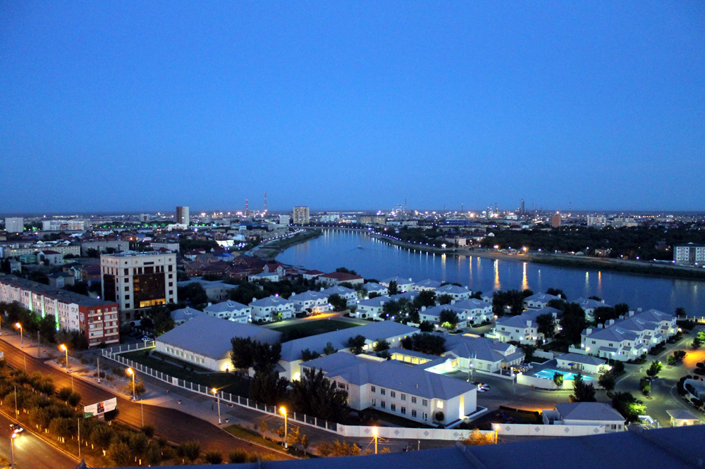
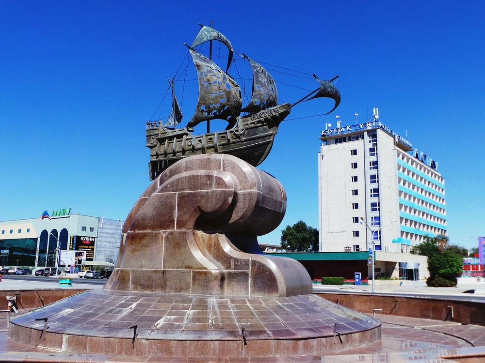

Акмолинская область
Акмолинская область (каз. Ақмола облысы) — область в Северном Казахстане. Анклавом, окружённым территорией области, является столица Казахстана Нур-Султан, административно не входящий в область. Административный центр с 1999 года — город Кокшетау. Граничит на западе с Костанайской, на севере — с Северо-Казахстанской, на востоке — с Павлодарской и на юге — с Карагандинской областями. Область расположена в непосредственной близости к таким развитым регионам России, как Урал, Тюменская, Томская, Омская и Новосибирская области, с которыми имеются установленные долговременные экономические связи, нарабатываются новые. Получают дальнейшее развитие экономические связи с соседними регионами Казахстана. Сохраняется тенденция расширения рынка сбыта продукции, производимой в области.
Актюбинская область
Актюбинская область (каз. Ақтөбе облысы) — область в западной частиКазахстана. Площадь 300 629 км² (2-е место в Казахстане), что составляет 11 % территории Казахстана. Численность населения 895.1 тыс. человек на 1 февраля 2020 года. Образована в результате административно-территориальной реформы 10 марта 1932 года в составе Казакской АССР. Исторически ей предшествовал Актюбинский округ, существовавший в 1921—1928 годах. В 1936 году область вошла в состав выделенной из РСФСР Казахской ССР, а с 1991 года, после распада СССР, в составе независимой Республики Казахстан. Область граничит на севере с Оренбургской областью России, на северо-востоке с Костанайской областью, на юго-востоке с Карагандинской и Кызылординской областями Казахстана, на юге с Республикой КаракалпакстанУзбекистана, на юго-западе с Мангистауской областью, на западе с Атырауской областью, на северо-западе с Западно-Казахстанской областью Казахстана. Административный центр — крупнейший город Западного Казахстана Актобе (с 1891 по 1999 годы — Актюбинск, отсюда название области).
Алматинская область
Алматинская область (каз. Алматы облысы) — область на юго-востоке Республики Казахстан. Образована 10 марта 1932 года в составе Казахской АССР, при этом вплоть до 1992 года было принято написание Алма-Атинская область. Административным центром области являлся город Алма-Ата; в апреле 2001 года областной центр Указом президента Республики Казахстан был перенесён из Алма-Аты в Талдыкорган. Алматинская область граничит со следующими регионами Казахстана: Жамбылская область на западе, Карагандинская область на северо-западе (водная граница проходит по озеру Балхаш), на северо-востоке расположена Восточно-Казахстанская область. В состав области в 1997 году вошла бывшая Талды-Курганская область, некогда расположенная к северу от собственно Алматинской. На востоке область граничит с КНР (СУАР), на юге с республикой Киргизия (Чуйская и Иссык-Кульская области). Область имеет довольно сложную географическую характеристику и очень разнообразный рельеф. Северо-западная часть представляет полупустынную равнину, в которой выделяют песчаные массивы Таукум, Белсексеул, Мойынкум. Рельеф слабо наклонён к озеру Балхаш и изрезан древними руслами рек Или, Каратал, Аксу, Коксу, Лепсы, Аягоз, самое значительное из которых — Баканас. Двумя отдельными массивами — на юге и востоке — простираются горные хребты: Заилийский Алатау и Джунгарский Алатау (горная система Тянь-Шань). На стыке их постепенно понижающихся склонов и расположено среднее русло реки Или. Сами склоны изобилуют конусами выноса её притоков (Чарын, Чилик, Алматинки, Курты и т. д.).
Алматы
Алматы — крупнейший город страны, который на протяжении почти 70 лет был столицей Казахстана. Сегодня Алматы называют «южной столицей», ведь по интенсивности экономической, общественной и культурной жизни — это действительно столичный город. Алматы располагается в предгорьях Заилийского Алатау, поэтому практически из любой точки города в ясную погоду можно увидеть горные вершины, опоясывающие Алматы с юга. С географическим положением связано и то, что город расположен на наклонной поверхности, поэтому в числе ориентиров, используемых алматинцами, понятия «вниз» и «вверх» — самые распространенные.
Атырауская область

Атырауская область (каз. Атырау облысы) (до 9 октября 1991 года носила название Гурьевская область) — область в составе Казахстана. Административный центр — город Атырау. Атырауская область граничит с Западно-Казахстанской областью, Мангистауской областью, Актюбинской областью и Астраханской областью Российской Федерации. Образована 15 января 1938 года. Область расположена на Прикаспийской низменности, к северу и востоку от Каспийского моря между низовьями Волгина северо-западе и плато Устюрт на юго-востоке.
Восточно-Казахстанская область

Восточно-Казахстанская область (каз. Шығыс Қазақстан облысы) — область в восточной части Казахстана, на границе с Россией и Китаем. Административный центр — город Усть-Каменогорск. Положение Восточно-Казахстанской области в центральной части Евразии, а также расположенные на её территории Алтайские горы обусловили её главные климатические особенности. В целом, это — резко континентальный климат с большими сезонными и суточными перепадами температур. Лето — жаркое и умеренно сухое, тогда как зима является холодной и снежной, в предгорьях умеренно холодной. Средние температуры зимних месяцев, по данным метеостанции г. Усть-Каменогорск, колеблются от −12°C до −15°C, в предгорьях Алтая от −9°C до −11°C. Однако, при вторжении арктических воздушных масс, температура может опускаться до −42°C. Регулярным явлением зимой в полупустынях и степях области являются метели, в межгорных котловинах часты инверсионные туманы. Среднемаксимальные температуры июля составляют от +25°C до +30°C. Максимальные летние температуры могут достичь отметки +45°C. Среднегодовой уровень осадков составляет от 300 до 600 мм, в горах — около 900 мм, местами до 1500 мм. Небольшую территорию Восточного Казахстана занимают Алтайские и Саур-Тарбагатайские горы с вечными ледниками на вершинах, Калбинский горный хребет, мелкохолмистые равнины, Казахский мелкосопочник, широкие котловины, обширные равнины вдоль рек.
Жамбылская область
Жамбылская область (каз. Жамбыл облысы; ранее носила название Джамбульская область) — область, расположенная на юге Республики Казахстан, образована Указом Президиума Верховного Совета СССР от 14 октября 1939 года из части Южно-Казахстанской и Алма-Атинской области. 4 мая 1993 года Постановлением Президиума Верховного Совета Казахстана название Джамбульской области на русском языке было изменено на Жамбылскую область. Область названа в честь Жамбыла Жабаева (при жизни известного по-русски как Джамбул Джабаев, 1846—1945), казахского и советского поэта-акына, лауреата Сталинской премии второй степени (1941). Административный центр области — город Тараз (ранее Джамбул, Жамбыл). В географическом отношении территория области в основном равнинная. Область занимает 144 264 км². В западной части Жамбылской области, к северо-востоку от хребта Каратау находятся пески Айкене, площадь которых 3200 км². Климат области (как и других регионов Южного Казахстана) засушливый и резко континентальный. В области проживает примерно 1,1 млн человек (2019 г., оценка). Население представлено более, чем 100 национальностями и народностями. 72,73 % постоянного населения составляют казахи. Наименьшая концентрация казахов наблюдается в г. Тараз (Джамбул), хотя и там их доля выросла с 48,84 % в 1989 г. до 72,73 % в 2019.
Западно-Казахстанская область
Западно-Казахстанская область (каз. Батыс Қазақстан облысы) — находится на северо-западе Республики Казахстан.Территория — 151 339 км², что составляет 5,6 % площади Казахстана. По этому показателю область занимает 8-е место в стране. Численность населения — 656 354 чел (на 1 ноября 2019 года). В городе живет 343 766 (52,37 %) человек, в сельской местности — 312 588 (47,62 %). Область была образована 10 марта 1932 года как Западно-Казакстанская область Казакской АССР в составе РСФСР. 3 мая 1962 года была переименована в Уральскую область. А в июле 1992 года Президиум Верховного Совета Республики Казахстан переименовал Уральскую область в Западно-Казахстанскую область. Область расположена в центральной части Евразии, на северо-западе Казахстана. Полностью располагается в Восточной Европе. Граничит с Российской Федерацией. Общая протяжённость границы составляет 2423 км.
Карагандинская область
Карагандинская область (каз. Қарағанды облысы) — область в центральной части Казахстана. Климат резко континентальный и крайне засушливый. Область занимает наиболее возвышенную часть Казахского мелкосопочника — Сарыарки. В настоящее время Карагандинская область — самая крупная по территории и промышленному потенциалу, богатая минералами и сырьём. Территория области в новых границах составляет 427 982 км² (15,7 % общей площади территории Казахстана), занимает 49-ое место в списке крупнейших административных единиц первого уровня в мире. В области проживает почти десятая часть всего населения Казахстана.
Костанайская область
Костанайская область (каз. Қостанай облысы) — область на севере Казахстана. Административный центр — город Костанай. Граничит с четырьмя областями Республики Казахстан (Актюбинской, Карагандинской, Акмолинской и Северо-Казахстанской) и тремя областями Российской Федерации (Оренбургской, Челябинской, Курганской). На территории Костанайской области в XIX веке проживали племена Среднего жуза: кереи (балта), аргыны (роды жогары шекты, томенги шекты), кыпшак (кулан, узын, колденен, карабалык), уаки, а также племена Младшего жуза. Один из значительных этапов переселения пришелся на конец XIX — начало XX веков и связан в первую очередь с открытием Сибирской железной дороги и Столыпинской аграрной реформой. Именно в этот период и был заложен фундамент украинской общины в Казахстане.
Кызылординская область
Кызылординская область (каз. Қызылорда облысы) — область в составе Казахстана. Образована 15 января 1938 года. Расположена в центральной части республики. Административный центр — город Кызылорда. Область образована в 1938 году из части современной Туркестанской области. 17 июня 1997 года Указом президента Казахстана. На территории Кызылординской области в 19 веке проживали племена: Младший жуз: Алшыны (алимулы) (байулы) (жетиру). Средний жуз: Кыпшак (кулан-кыпшак), Коныраты (коктинулы котенши), Найман (баганалы). По области действуют 410 государственных организаций культуры и архивов, в том числе 171 домов культуры и клубов,209 библиотек, 14 музеев, 11 архивов, областной казахский академический музыкально-драматический театр имени Н.Бекежанова, областная филармония, областной центр по развитию народного творчества, государственное учреждение по охране памятников истории и культуры, городской парк культуры и отдыха. В 2018 году наследие Коркыта ата внесено в список нематериального культурного наследия ЮНЕСКО и включено в список мировых щедевров
Мангистауская область

Мангистауская область (каз. Маңғыстау облысы) — область на юго-западе Казахстана, ранее называлась Мангышлакской. Образована 20 марта 1973 года из южной части Гурьевской области. В 1988 году область упразднена, восстановлена в 1990 году под именем Мангистауской. Административный центр — город Актау. Расположена к востоку от Каспийского моря на плато Мангышлак (Мангистау), граничит на северо-востоке с Атырауской и Актюбинской областями, на юге — с Туркменией и на востоке — с Республикой Каракалпакстан в составе Узбекистана. Представляет собой промышленный регион, где добывают 25% нефти Казахстана (почти 20 млн тонн), и проходит нефтепровод Актау — Жетыбай — Узень. Помимо того, в Мангистауской области находятся «морские ворота» Казахстана — город Актау.
Нур-Султан
Нур-Султан (каз. Нұр-Сұлтан, ранее Акмолинск, Целиноград, Акмола, Астана) — столица Республики Казахстан с 10 декабря 1997 года. Город расположен на севере страны, на берегах реки Ишим, административно разделён на 4 района. Акмолинск получил статус города 26 сентября 1862 года. Городом-миллионером Астана стала в июне 2017 года, когда население составило 1 002 874 жителя. На начало 2021 года население Нур-Султана составляло 1 184 469 человек, что является вторым показателем в Казахстане после Алма-Аты.
Павлодарская область
Павлодарская область (каз. Павлодар облысы) — область Республики Казахстан, расположена на берегу Иртыша, самой крупной реки Казахстана. Образована в январе 1938 года. Областной центр — город Павлодар. Область находится на северо-востоке Республики Казахстан и граничит на севере — с Омской, северо-востоке — с Новосибирской, на востоке — с Алтайским краем Российской Федерации, на юге — с Восточно-Казахстанской и Карагандинской областями, на западе с Акмолинской и Северо-Казахстанской областями Республики Казахстан. С 1956 года Павлодар стал одним из центров освоения целинных и залежных земель. В результате подъёма целины посевные площади области увеличились в десятки раз. Добыча угля и освоение целины дали мощный толчок развитию производительных сил Павлодарской области. С 1949 по 1962 год юг территории Павлодарской области, входил в состав Семипалатинского ядерного полигона. Выгодное экономико-географическое положение, богатейшие ресурсы, наличие транспортных путей.
Северо-Казахстанская область
Северо-Казахстанская область (каз. Солтүстік Қазақстан облысы) — одна из четырнадцати областей в составе Казахстана. Административный центр — город Петропавловск. На территории Северо-Казахстанской области в 19 веке проживали племена Среднего жуза: аргыны (роды атыгай, карауыл, канжыгалы), кереи (курсары, аксары), кыпшак (кулан) уаки. В Северо-Казахстанской области существует 5 городов: Петропавловск, Тайынша, Булаево, Мамлютка и Сергеевка. Из них с населением выше 10 тысяч человек: Петропавловск (208 362 чел. (2014 год)), Тайынша (11 627 чел. (2013 год)). Остальные города имеют население ниже 10 тысяч человек.
Туркестанская область
Туркестанская область (каз. Түркістан облысы, до 2018 г. — Южно-Казахстанская область) — область в Казахстане. Область основана 10 марта 1932 года как Южно-Казакская область, название которой в 1936 году было изменено на Южно-Казахстанская. С 3 мая 1962 года по 6 июля 1992 года область называлась Чимкентской, а в 1992 году области вернули название Южно-Казахстанская. 19 июня 2018 года указом президента Казахстана Южно-Казахстанская область переименована в Туркестанскую, а её административный центр перенесён из Шымкента в Туркестан; Шымкент был изъят из состава Южно-Казахстанской области, получив статус города республиканского значения (отдельная административно-территориальная единица, равная области). Площадь области составляет 116 280 км² (4,3 % территории республики). Расстояние между самыми северными и южными участками по прямой составляет 506 км. Тип климата — резко континентальный.